Recomendaciones
Aca voy a dejarte algunas opiniones acerca de juegos, peliculas/series/animes o generos de musica.
Atención: Estas son mis opiniones, no busco subestimar los gustos de otro.
Juegos
- Mass Effect: Trilogy
- Si te gusta Star Wars y una buena historia, Mass Effect es tu juego, no solo por el hecho de ser uno de mis juegos favoritos, es porque tambien incluye un sistema de rol con finales alternativos en función de tus decisiones que vas tomando a lo largo de la historia.
- Infamous: Second Son
- Gba Emulator
- Juegos de pokemon originales
- Fangames de Pokemon
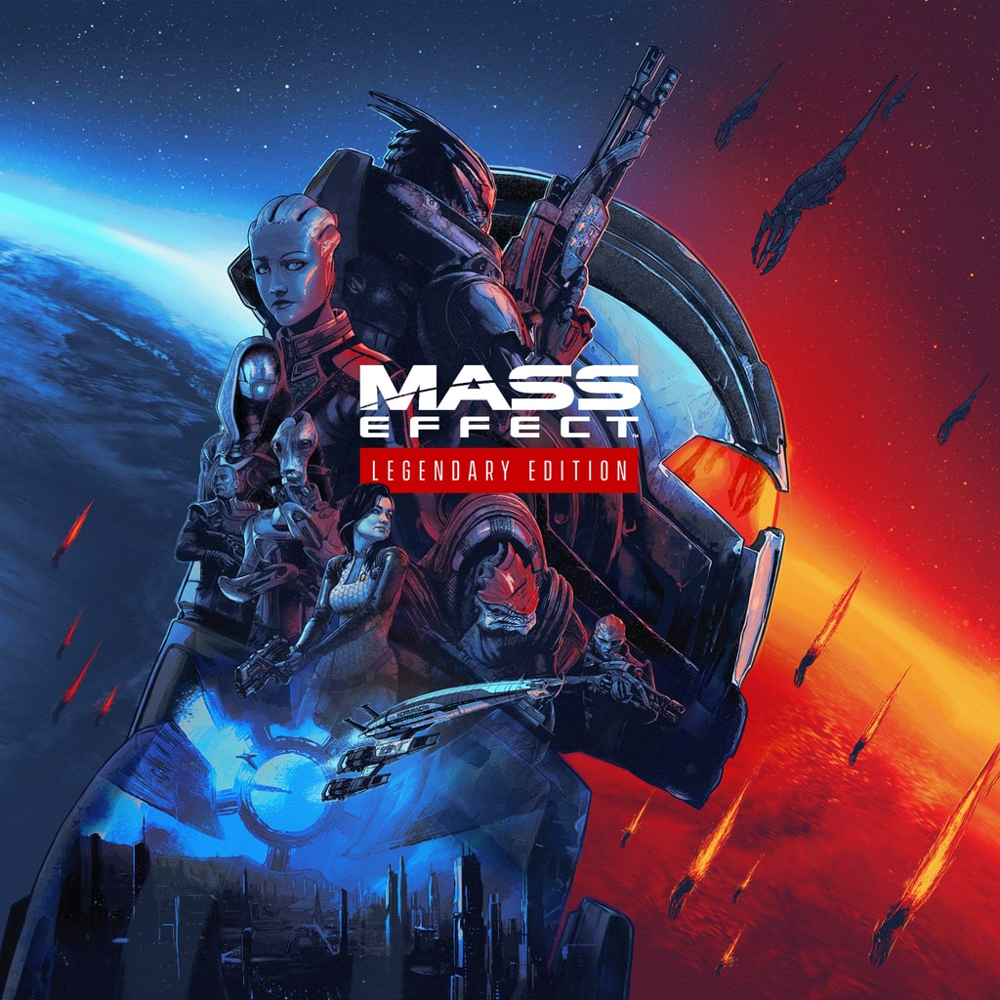
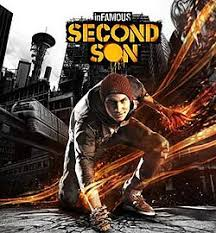
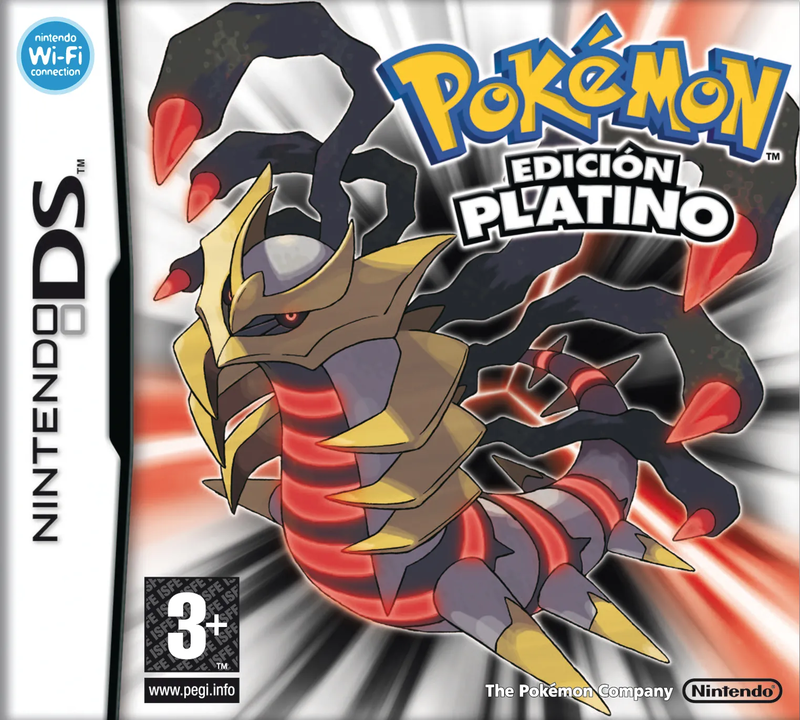
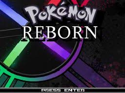
Peliculas/Series/Animes
- Dune: Parte 2
- Lo intrigante de la pelicula, además de la historia, son los efectos. Ganadora del Oscar a mejor Sonido y Efectos visuales. De las mejores peliculas que vi en el 2024, obviamente se necesita ver la parte uno para entenderla.
- Peaky Blinder (serie y pelicula)
- South Park
- En caso de que te guste el anime:
- Evangelions
- Gachiakuta
- Blue Lock
- Soul Eater
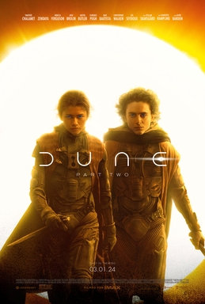
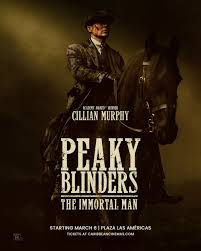
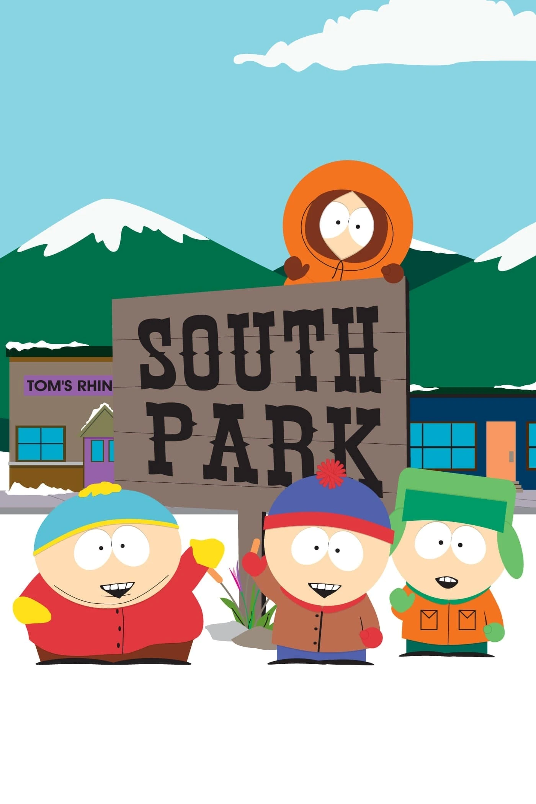
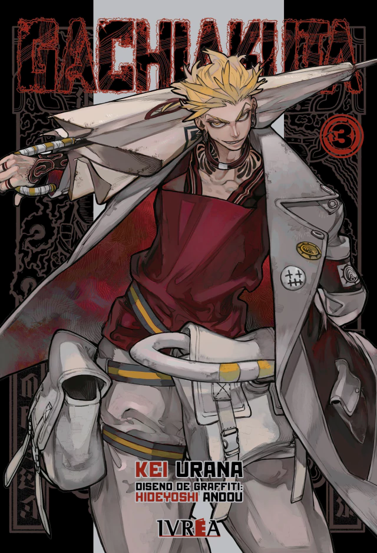
Generos de Musica
- Trap
- EDM - Electronic Dance Music
- Lofi
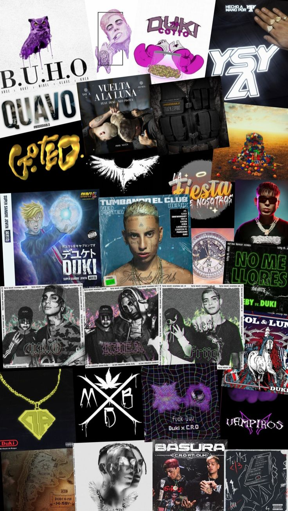
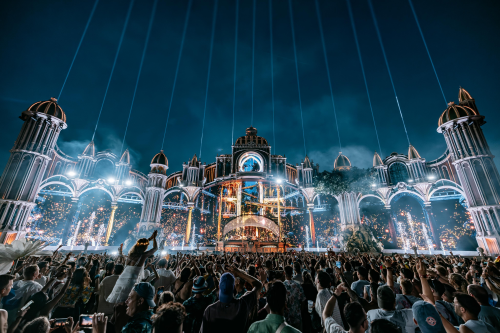
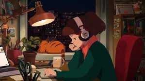